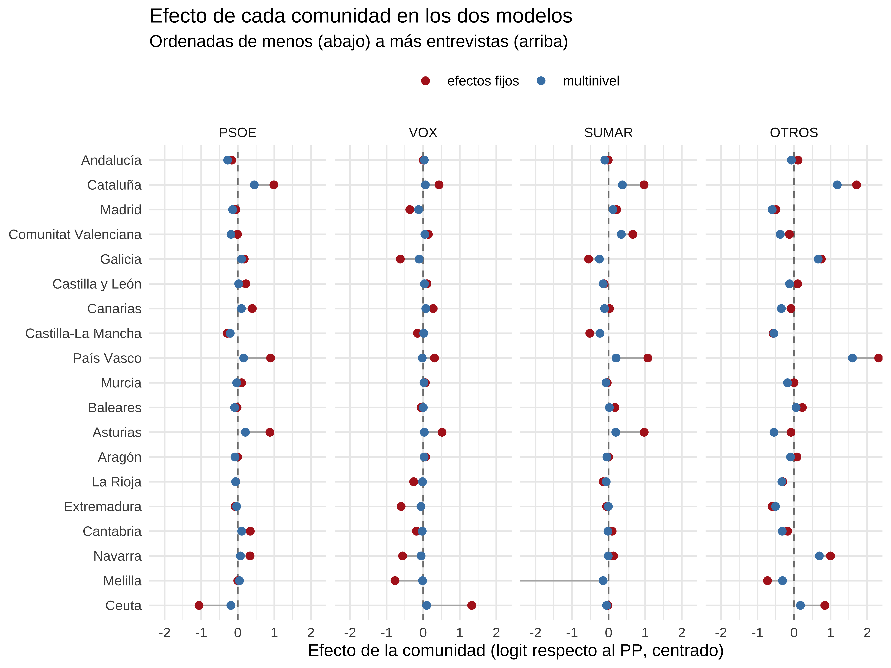
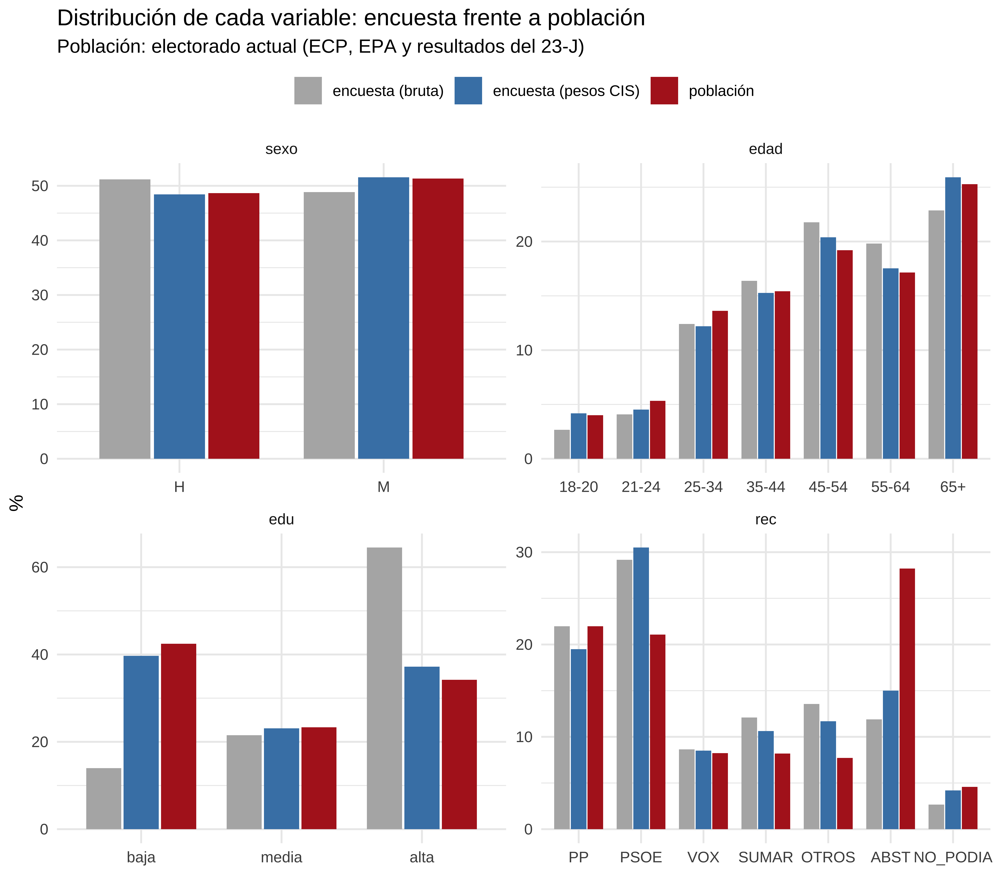
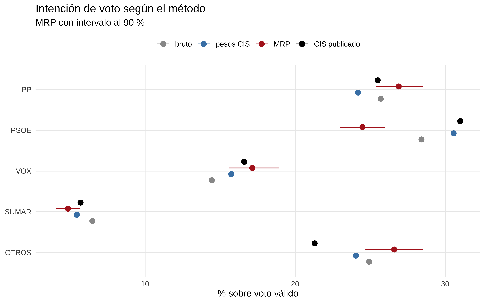
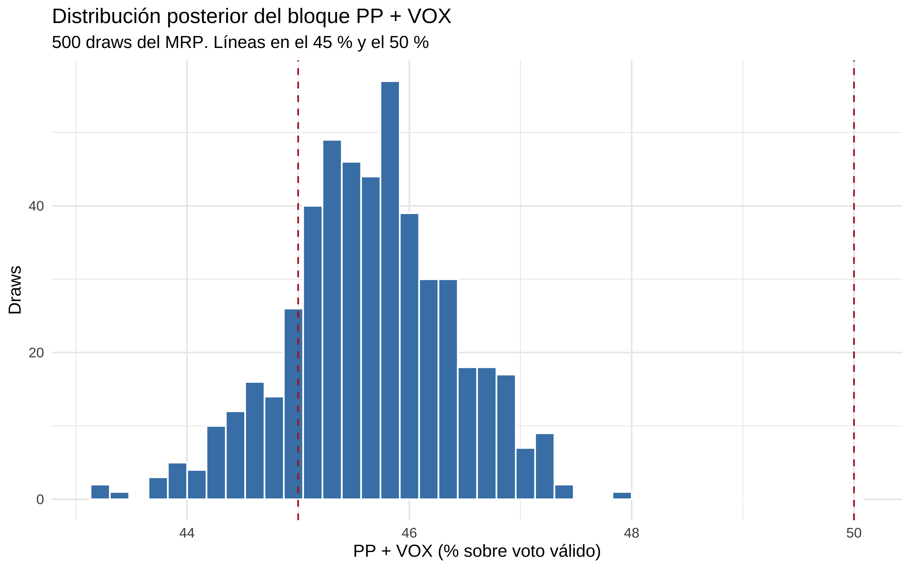

MRP y raking: postestratificar sin tener la conjunta
2026
estadística
encuestas
MRP
modelos mixtos
R
Multilevel Regression and Poststratification con la encuesta del CIS, y raking para fabricar la tabla de postestratificación que nadie publica.
Author
José Luis Cañadas Reche
Published
October 4, 2026
Este post está escrito entre Claude y yo. Ha llevado varias horas, porque le he guiado en cada paso y comprobado lo que hace en cada paso. También hay cosas que he reescrito yo, e intentar que fuera pedagógico en la medida de lo posible.
Creo que este post puede ser muy útil a todo aquel que trabaje con encuestas y tenga que hacer calibración y postestratificación, y además combinarlo con un modelo bayesiano, que funciona mejor en combinaciones de variables dónde apenas hay dato ( o incluso sin dato) y tener en cuenta la incertidumbre.
NoteListening
La idea
MRP son las siglas de Multilevel Regression and Poststratification. Son dos pasos:
Multilevel Regression: un modelo que predice la intención de voto en función de unas cuantas variables (comunidad, sexo, edad, estudios, recuerdo de voto).
Poststratification: aplicar esas predicciones a la población real, con cuánta gente hay de verdad en cada combinación de esas variables.
Uso el barómetro del CIS de septiembre (estudio 3577). La descarga y la preparación de los datos están en scripts aparte, y en el post solo leo lo que generan.
00_partidos.R: no se ejecuta solo. Define los partidos, sus territorios y la recodificación de las etiquetas del CIS, y lo cargan los demás scripts.
01_descarga.R: descarga la población del INE (ECP y EPA) y los resultados del 23-J.
02_harmoniza.R: recodifica la encuesta del CIS y la deja con las mismas categorías que el INE y el Ministerio del Interior.
03_targets.R: construye los objetivos de población para el raking.
04_raking.R: imputa el recuerdo de voto que falta y hace el raking. Genera la tabla de postestratificación.
05_mrp.R: el modelo y la postestratificación del post, en un script, más una comparación con el raking clásico de pesos.
Antes de empezar:
Descarga los microdatos del estudio 3577 desde la web del CIS y guarda 3577.sav en datos/. El script no los descarga.
Ejecuta los scripts desde la raíz del repositorio. Las rutas son relativas a ella.
Paquetes: ineapir, infoelectoral, haven, mipfp, nnet, survey, brms y cmdstanr.
Si no quieres ejecutar los scripts, los ficheros que lee el post, incluidos los modelos ya ajustados, están en esta release. Para bajarlos todos a datos/:
Fuente de los datos de la encuesta: Centro de Investigaciones Sociológicas, estudio 3577, descargado el 22 de septiembre de 2026. Los ficheros de la release son recodificaciones propias. El CIS no participa en este análisis ni lo respalda.
Primero la M: por qué multinivel
Mostrar código
library(tidyverse)library(brms)library(nnet)library(gt)dir_datos <- here::here("2026/10/mrp-raking/datos")voto_lv <-c("PP","PSOE","VOX","SUMAR","ERC","JUNTS","AC","BILDU","PNV","BNG","CCA","OTROS")voto5_lv <-c("PP", "PSOE", "VOX", "SUMAR", "OTROS") # para la primera parte# Comunidades en las que se presenta cada partido regional (23-J)territorio <-list(ERC ="Cataluña",JUNTS ="Cataluña",AC ="Cataluña",BILDU =c("País Vasco", "Navarra"),PNV ="País Vasco",BNG ="Galicia",CCA ="Canarias")cis <-readRDS(file.path(dir_datos, "cis_imputado.rds"))dat <- cis |>filter(!is.na(voto), !is.na(edu), !is.na(edad), !is.na(rec))nrow(dat)#> [1] 3128
De los 4018 entrevistados, solo hay 3128 que declaran intención de voto válido. Si estuviéramos haciendo la estimación en serio , habría que hacer ciertas hipótesis o ver si esa falta de respuesta es aleatoria o viene determinada por otras variables. No estamos ahí, así que me los cargo.
Viendo algunas filas de los datos.
Mostrar código
dat |>select(ccaa, sexo, edad, edu, rec, voto) |>head()#> # A tibble: 6 × 6#> ccaa sexo edad edu rec voto #> <fct> <fct> <fct> <fct> <fct> <fct>#> 1 Andalucía H 45-54 media PSOE SUMAR#> 2 Andalucía M 45-54 alta PSOE VOX #> 3 Andalucía M 65+ media PSOE PSOE #> 4 Andalucía M 25-34 alta PP VOX #> 5 Andalucía M 65+ media SUMAR PSOE #> 6 Andalucía M 45-54 alta PSOE PSOE
El recuerdo de voto es lo que más afecta a la intención, pero para ejemplificar mejor lo que hace mejor un modelo multinivel vs uno clásico lo voy a eliminar en esta primera parte del post
NoteCómo agrupo los partidos
Tanto en la intención de voto (voto) como en el recuerdo (rec) uso los mismos grupos:
PP, PSOE y VOX.
SUMAR, que en realidad es SUMAR y aliados: Sumar, Podemos, IU, Compromís, Más Madrid y CHA. Es decir, los partidos que fueron juntos en la candidatura de Sumar el 23-J. Así el recuerdo y la intención miden lo mismo.
Los nacionalistas y regionalistas, cada uno por separado: ERC, JUNTS y AC (Aliança Catalana) en Cataluña, BILDU (País Vasco y Navarra), PNV (País Vasco), BNG (Galicia) y CCA (Coalición Canaria).
Aliança Catalana no se presentó a las generales del 23-J, así que solo está en la intención, no en el recuerdo.
OTROS: el resto de partidos (Se Acabó la Fiesta, PACMA, CUP, UPN…) y el voto en blanco.
Los partidos regionales solo se pueden votar en su comunidad. Las pocas respuestas de fuera de su territorio (por ejemplo, alguien en Baleares que dice ERC) las paso a OTROS.
El recuerdo tiene además dos categorías: ABST (se abstuvo) y NO_PODIA (tenía menos de 18 años en julio de 2023).
No se llega a tener datos de todas las combinaciones
Si cruzo comunidad, sexo, edad y estudios salen 19 × 2 × 7 × 3 = 798 combinaciones posibles o celdas, para entendernos. Veamos cuántas personas hay en cada celda con datos.
En esta primera parte agrupo los partidos regionales dentro de OTROS y me quedo con cinco categorías. Para ver qué hace un modelo multinivel no hacen falta más, y los gráficos se leen mejor:
Solo 544 de las 798 celdas tienen alguna entrevista. De esas, 230 tienen una o dos personas. Estimar la intención de voto celda a celda, con su proporción bruta, no tiene sentido. Hay que ajustar un modelo que use información de unas celdas para otras.
Por comunidad pasa lo mismo
Mostrar código
n_ccaa <- dat |>count(ccaa, name ="n_ccaa") |>arrange(n_ccaa)n_ccaa#> # A tibble: 19 × 2#> ccaa n_ccaa#> <fct> <int>#> 1 Ceuta 16#> 2 Melilla 17#> 3 Navarra 61#> 4 Cantabria 71#> 5 Extremadura 73#> 6 La Rioja 75#> 7 Aragón 77#> 8 Asturias 78#> 9 Baleares 83#> 10 Murcia 88#> 11 País Vasco 133#> 12 Castilla-La Mancha 134#> 13 Canarias 148#> 14 Castilla y León 156#> 15 Galicia 176#> 16 Comunitat Valenciana 300#> 17 Madrid 450#> 18 Cataluña 458#> 19 Andalucía 534
Ceuta y Melilla tienen 16 y 17 entrevistas. Andalucía, 534.
Dos modelos
Do modelos multinomiales con las mismas variables. Lo único que cambia es cómo tratan las variables categóricas.
Efectos fijos (nnet::multinom): cada comunidad tiene su coeficiente y se estima solo con sus datos. Es lo que se conoce como no pooling.
Multinivel (brms): los coeficientes de comunidad, edad y estudios salen de una distribución normal común, con su desviación típica estimada. Es el partial pooling.
Mostrar código
mod_fe <-multinom( voto ~ sexo + edad + edu + ccaa,data = dat_dem,trace =FALSE,maxit =500)
El modelo multinivel se ajusta sobre los datos agregados por celda, con trials(n). Da lo mismo que ajustarlo sobre cada persona y es mucho más rápido. Ver post antiguo
Mostrar código
# Las mismas priors para cada partido (cada uno es un "mu" respecto al PP)priors_multinom <-function(partidos) {Reduce(`+`,lapply(paste0("mu", partidos[-1]), function(dp) {prior_string("normal(0, 1.5)", class ="Intercept", dpar = dp) +prior_string("normal(0, 1)", class ="b", dpar = dp) +prior_string("exponential(1)", class ="sd", dpar = dp) }) )}priors_dem <-priors_multinom(voto5_lv)priors_dem#> prior class coef group resp dpar nlpar lb ub tag source#> normal(0, 1.5) Intercept muPSOE <NA> <NA> user#> normal(0, 1) b muPSOE <NA> <NA> user#> exponential(1) sd muPSOE <NA> <NA> user#> normal(0, 1.5) Intercept muVOX <NA> <NA> user#> normal(0, 1) b muVOX <NA> <NA> user#> exponential(1) sd muVOX <NA> <NA> user#> normal(0, 1.5) Intercept muSUMAR <NA> <NA> user#> normal(0, 1) b muSUMAR <NA> <NA> user#> exponential(1) sd muSUMAR <NA> <NA> user#> normal(0, 1.5) Intercept muOTROS <NA> <NA> user#> normal(0, 1) b muOTROS <NA> <NA> user#> exponential(1) sd muOTROS <NA> <NA> user
La categoría de referencia es el PP. Así que cada partido tiene su propio conjunto de coeficientes, en escala logit respecto al PP.
El efecto de cada comunidad
Veamos el coeficiente de cada comunidad en los dos modelos. En el de efectos fijos los coeficientes van respecto a Andalucía, así que los centro restando su mediana para que sean comparables con los efectos aleatorios del multinivel, que ya están centrados en 0.
En Melilla no hay ningún votante de SUMAR entre sus 17 entrevistas. El modelo de efectos fijos hace lo que le pedimos: busca el coeficiente que mejor ajusta esos datos. Y el que mejor ajusta un 0 es “menos infinito”. Se queda en −9,8 porque el optimizador se para. El multinivel no se cree que un 0 de 17 signifique que en Melilla nadie vota a SUMAR, y deja el efecto cerca de 0.
Ceuta tiene el problema contrario: 7 de sus 16 entrevistados votarían a VOX. Con efectos fijos, su efecto en VOX es 1,33. El multinivel lo deja en 0,09.
Lo vemos para todas las comunidades, ordenadas por tamaño muestral. Recorto el eje horizontal para que no se coma el gráfico el valor de Melilla.
Mostrar código
efectos |>mutate(ccaa =fct_reorder(ccaa, n_ccaa)) |>ggplot(aes(x = efecto, y = ccaa, color = modelo)) +geom_vline(xintercept =0, linetype ="dashed", color ="grey50") +geom_line(aes(group = ccaa), color ="grey70") +geom_point(size =2) +facet_wrap(~partido, nrow =1) +coord_cartesian(xlim =c(-2.2, 2.2)) +scale_color_manual(values =c("efectos fijos"="firebrick", "multinivel"="steelblue") ) +labs(x ="Efecto de la comunidad (logit respecto al PP, centrado)",y =NULL,color =NULL,title ="Efecto de cada comunidad en los dos modelos",subtitle ="Ordenadas de menos (abajo) a más entrevistas (arriba)" ) +theme_minimal() +theme(legend.position ="top")

Los puntos azules están más cerca del 0 que los rojos. Eso es el partial pooling, también llamado shrinkage o contracción: cada efecto de comunidad se acerca a la media de todas. Y no todas se acercan lo mismo. En el gráfico las comunidades con pocas entrevistas se quedan casi en el 0. Arriba, Cataluña y País Vasco mantienen buena parte de su efecto en OTROS, donde están ERC, Junts, PNV y Bildu.
Llamamos contracción a 1 − efecto multinivel / efecto fijos. Vale 0 si el multinivel deja el efecto como está y 1 si lo lleva a 0. Para los efectos fijos mayores de 0,2 en valor absoluto; con efectos casi nulos el cociente no significa nada.
Cuantas menos entrevistas, más contracción: casi un 90 % en Ceuta y Melilla, y la mitad en las comunidades con más de 200 entrevistas. El modelo decide cuánto contraer cada efecto con dos cosas:
Cuántos datos tiene la comunidad. Con pocas entrevistas, su estimación propia es poco fiable y el modelo se fía más de la media.
Cuánto varían las comunidades entre sí. Es la desviación típica de los efectos de comunidad, y también la estima el modelo.
En OTROS la desviación típica es la mayor, 0,71. Las comunidades difieren de verdad en el voto a partidos regionales, y el modelo deja que se separen más.
Y en una celda concreta
Al final lo que vamos a usar son predicciones por celda. Tomo dos celdas de Ceuta en las que no hay ninguna entrevista:
Mostrar código
nd <-tibble(ccaa =c("Ceuta", "Ceuta"),sexo =c("H", "M"),edad =c("65+", "25-34"),edu =c("baja", "media"),n =1) |>mutate(ccaa =factor(ccaa, levels =levels(dat$ccaa)),sexo =factor(sexo, levels =levels(dat$sexo)),edad =factor(edad, levels =levels(dat$edad)),edu =factor(edu, levels =levels(dat$edu)) )nd#> # A tibble: 2 × 5#> ccaa sexo edad edu n#> <fct> <fct> <fct> <fct> <dbl>#> 1 Ceuta H 65+ baja 1#> 2 Ceuta M 25-34 media 1# ¿Hay alguien en estas celdas?dat |>semi_join(nd, by =c("ccaa", "sexo", "edad", "edu")) |>nrow()#> [1] 0
Ninguna de las dos tiene datos, pero los dos modelos pueden predecir. Combinan lo que saben de cada sexo, cada tramo de edad, cada nivel de estudios y de la gente de Ceuta.
Las diferencias son grandes. El modelo de efectos fijos se cree del todo los 7 votantes de VOX de 16 entrevistas, y le da a VOX un 35 % en la primera celda y un 59 % en la segunda. El multinivel lo modera: VOX baja al 12 % y al 27 %.
¿Cuál está bien? No lo sabemos, porque en esas celdas no hay nadie. Pero un 59 % de VOX en una celda sin datos, sacado de 16 entrevistas de toda Ceuta, no es creíble.
Cuando sumemos cientos de celdas en la postestratificación, esos ceros y esos extremos se acumulan. Por eso la M de MRP es multinivel.
¿Y el recuerdo de voto?
El modelo que voy a usar para la estimación final sí lleva el recuerdo de voto. Hay dos razones:
Es, con diferencia, la variable que más explica la intención de voto actual.
Solo se puede postestratificar por las variables que están en el modelo. Si el modelo no usa el recuerdo, corregir en la población cuánta gente votó a cada partido en 2023 no cambia nada en la estimación.
La segunda razón es la importante para lo que viene: la encuesta del CIS tiene el recuerdo de voto bastante desviado respecto a lo que salió en las urnas.
La encuesta no se parece a la población
Una encuesta es una muestra, y nunca sale exactamente como la población. Unos grupos contestan más que otros, y el diseño muestral también reparte las entrevistas a su manera. Para ver cuánto se desvía, comparo la distribución de cada variable en la encuesta con la de la población.
Para la población uso tres fuentes:
Variable
Fuente
Sexo, edad y comunidad
Estadística Continua de Población (INE)
Nivel de estudios por sexo y comunidad
Encuesta de Población Activa (INE)
Recuerdo de voto por comunidad
Resultados del 23-J por municipio (Ministerio del Interior), más los que han cumplido 18 años desde entonces
Para el recuerdo uso los resultados por municipio y no por provincia. Los provinciales incluyen el voto de los residentes en el extranjero (CERA): 2,3 millones de personas en el censo, con una participación del 8,9 %. El CIS no los entrevista, y si los meto la abstención del objetivo sube casi cuatro puntos, del 28,2 % al 32,0 %.
Cada fuente tiene su universo: residentes, mayores de 16, censo electoral. En 03_targets.R las reescalo todas al mismo total dentro de cada comunidad: el electorado de hoy, 36,83 millones de personas.
Cada elemento de tg es una tabla con cuánta gente hay en cada combinación de comunidad y otra variable. Por ejemplo, en Andalucía hay 1,6 millones de personas que votaron al PP en el 23-J.
Ahora comparo. Para la encuesta uso las 4.018 entrevistas, no solo las de voto válido, porque lo que me interesa aquí es a quién ha entrevistado el CIS. Añado también la distribución con los pesos que publica el CIS en la variable PESO.
Mostrar código
marginal_pob <-function(d, v) { d |>group_by(categoria =as.character(.data[[v]])) |>summarise(N =sum(N), .groups ="drop") |>mutate(poblacion =100* N /sum(N)) |>select(-N)}marginal_enc <-function(v) { cis |>group_by(categoria =as.character(.data[[v]])) |>summarise(encuesta =n(),ponderada_cis =sum(peso),.groups ="drop" ) |>mutate(encuesta =100* encuesta /sum(encuesta),ponderada_cis =100* ponderada_cis /sum(ponderada_cis) )}fuentes <-list(ccaa = tg$sexo_edad_ccaa,sexo = tg$sexo_edad_ccaa,edad = tg$sexo_edad_ccaa,edu = tg$edu_sexo_ccaa,rec = tg$rec_ccaa)marginales <-imap_dfr(fuentes, function(d, v) {marginal_enc(v) |>left_join(marginal_pob(d, v), by ="categoria") |>mutate(variable = v, .before =1)})marginales |>filter(variable %in%c("edu", "rec")) |>mutate(variable =if_else( variable =="edu","Nivel de estudios","Recuerdo de voto" ) ) |>gt(groupname_col ="variable", rowname_col ="categoria") |>cols_label(encuesta ="Encuesta (bruta)",ponderada_cis ="Encuesta (pesos CIS)",poblacion ="Población" ) |>tab_spanner("%", columns =c(encuesta, ponderada_cis, poblacion)) |>fmt_number(decimals =1, locale ="es") |>tab_style(style =cell_fill(color ="#fde0dd"),locations =cells_body(columns =c(encuesta, ponderada_cis, poblacion),rows =abs(encuesta - poblacion) >5 ) ) |>tab_footnote("Resaltadas, las categorías en las que la encuesta bruta se aleja más de 5 puntos de la población." )
%
Encuesta (bruta)
Encuesta (pesos CIS)
Población
Nivel de estudios
alta
64,5
37,2
34,2
baja
14,0
39,7
42,5
media
21,5
23,1
23,3
Recuerdo de voto
ABST
12,4
15,6
28,2
BILDU
1,2
0,9
0,9
BNG
0,8
0,7
0,4
CCA
0,3
0,3
0,3
ERC
1,9
1,7
1,3
JUNTS
1,2
0,9
1,1
NO_PODIA
2,7
4,2
4,6
OTROS
6,8
5,7
3,0
PNV
0,6
0,4
0,7
PP
22,0
19,5
22,0
PSOE
29,5
31,0
21,1
SUMAR
12,1
10,5
8,2
VOX
8,7
8,6
8,2
Resaltadas, las categorías en las que la encuesta bruta se aleja más de 5 puntos de la población.
Mostrar código
orden <-c("H","M","18-20","21-24","25-34","35-44","45-54","55-64","65+","baja","media","alta","PP","PSOE","VOX","SUMAR","ERC","JUNTS","BILDU","PNV","BNG","CCA","OTROS","ABST","NO_PODIA")marginales |>filter(variable !="ccaa") |>pivot_longer(c(encuesta, ponderada_cis, poblacion),names_to ="fuente",values_to ="pct" ) |>mutate(categoria =factor(categoria, levels = orden),variable =factor(variable, levels =c("sexo", "edad", "edu", "rec")),fuente =factor( fuente,levels =c("encuesta", "ponderada_cis", "poblacion"),labels =c("encuesta (bruta)", "encuesta (pesos CIS)", "población") ) ) |>ggplot(aes(x = categoria, y = pct, fill = fuente)) +geom_col(position =position_dodge(width =0.8), width =0.75) +facet_wrap(~variable, scales ="free", ncol =2) +scale_fill_manual(values =c("grey70", "steelblue", "firebrick")) +labs(x =NULL,y ="%",fill =NULL,title ="Distribución de cada variable: encuesta frente a población",subtitle ="Población: electorado actual (ECP, EPA y resultados del 23-J)" ) +theme_minimal() +theme(legend.position ="top")

Lo que salta a la vista:
Estudios. Es la desviación más grande. En la encuesta, el 64,5 % tiene estudios altos. En la población, el 34,2 %. Las personas con estudios bajos son el 42,5 % de la población y solo el 14,0 % de la encuesta. Es un patrón conocido: quien tiene más estudios contesta más a las encuestas.
Recuerdo de voto. Ojo, aquí hablo de lo que la gente dice que votó en 2023, no de lo que votaría ahora. En la encuesta, el 29,5 % dice que votó al PSOE en 2023. En el censo, el PSOE sacó votos equivalentes al 21,1 %. Y solo el 12,4 % dice que se abstuvo, frente al 28,2 % real. SUMAR y OTROS también salen por encima.
Edad y sexo. Hay desviaciones, pero pequeñas: faltan jóvenes de 18 a 24 años y mayores de 65.
Los pesos del CIS arreglan bien los estudios, la edad y el sexo. Pero no arreglan el recuerdo de voto: con los pesos, el PSOE sigue en un 31,0 % y la abstención en un 15,6 %, muy lejos del 21,1 % y el 28,2 % de las urnas.
Por comunidad, las desviaciones vienen del diseño:
El CIS entrevista de más a las comunidades pequeñas (La Rioja, Ceuta, Melilla, Cantabria, Navarra). Lo hace a propósito, para tener un mínimo de entrevistas en cada una, y luego lo corrige con los pesos.
Entonces, ¿qué hago?
El modelo multinivel ya usa sexo, edad, estudios, comunidad y recuerdo. Así que, si la encuesta tiene demasiada gente con estudios altos o demasiados votantes del PSOE, el modelo no se equivoca por eso al predecir en cada celda. El problema está en cuánto pesa cada celda al sumar.
Ese peso tiene que salir de la población, no de la encuesta. Y es lo que hace la P de MRP: multiplicar la predicción de cada celda por cuánta gente hay en esa celda en la población real. Para eso hace falta saber cuánta gente hay en cada combinación de comunidad, sexo, edad, estudios y recuerdo. Esa tabla no la publica nadie. Solo tenemos las tablas por separado que acabamos de ver, y con ellas la vamos a construir mediante raking.
La P: postestratificar
La postestratificación es una media ponderada. Para cada celda \(j\) (una combinación de comunidad, sexo, edad, estudios y recuerdo) tengo dos cosas:
\(\theta_j\): la probabilidad de votar a cada partido que predice el modelo para esa celda.
\(N_j\): cuánta gente hay en esa celda en la población.
Es decir: cuántos votantes de cada partido hay en cada celda (\(N_j \theta_j\)), sumados para todas las celdas y divididos entre la población total. Si quiero la estimación de una comunidad, hago la misma cuenta solo con las celdas de esa comunidad.
Los \(\theta_j\) salen del modelo. Los \(N_j\) deberían salir de la población. Y aquí está el problema: necesito saber cuánta gente hay en cada combinación de comunidad × sexo × edad × estudios × recuerdo, y esa tabla no existe. El INE no la publica, y el recuerdo de voto no sale en ningún censo. Lo que sí tengo son las tablas de la sección anterior, por separado:
sexo × edad × comunidad (ECP),
estudios × sexo × comunidad (EPA),
recuerdo × comunidad (resultados del 23-J).
Necesito una tabla conjunta que cumpla esas tres a la vez. La construyo con raking, también llamado IPF (Iterative Proportional Fitting).
Raking con dos variables
Antes de ir a las cinco dimensiones, lo veo con dos: estudios y recuerdo. Parto de la tabla cruzada de la encuesta, que llamo semilla:
Mostrar código
library(mipfp)semilla_2d <-xtabs(~ edu + rec, cis)semilla_2d#> rec#> edu PP PSOE VOX SUMAR ERC JUNTS BILDU PNV BNG CCA OTROS ABST NO_PODIA#> baja 107 206 40 43 8 3 2 0 2 1 26 114 10#> media 168 233 81 97 14 11 9 7 5 3 41 107 89#> alta 608 745 228 346 54 33 36 17 24 8 205 279 8
Y tengo los dos marginales de la población, que es lo que la tabla tiene que cumplir:
Mostrar código
obj_edu <-xtabs(N ~ edu, tg$edu_sexo_ccaa)obj_rec <-xtabs(N ~ rec, tg$rec_ccaa)obj_edu#> edu#> baja media alta #> 15638656 8598849 12592200obj_rec#> rec#> PP PSOE VOX SUMAR ERC JUNTS BILDU PNV #> 8093469 7762316 3034117 3014755 462890 392609 333321 275859 #> BNG CCA OTROS ABST NO_PODIA #> 152348 114707 1107831 10396976 1688507
El IPF hace algo muy sencillo:
Reescala las filas de la semilla para que sumen el marginal de estudios.
Reescala las columnas para que sumen el marginal de recuerdo. Al hacerlo, las filas dejan de cuadrar un poco.
Repite los pasos 1 y 2 hasta que filas y columnas cuadran a la vez.
Con mipfp::Ipfp le paso la semilla, qué dimensiones tiene cada objetivo y los objetivos. Trabajo en proporciones y luego multiplico por el total, porque Ipfp exige que todos los objetivos sumen exactamente lo mismo y los redondeos dan problemas.
Mostrar código
ipf_2d <-Ipfp(seed = semilla_2d /sum(semilla_2d),target.list =list(1, 2), # dimensión 1 = edu, dimensión 2 = rectarget.data =list(obj_edu /sum(obj_edu), obj_rec /sum(obj_rec)),tol =1e-10)tabla_2d <- ipf_2d$x.hat *sum(obj_rec)round(tabla_2d /1000) # en miles de personas#> rec#> edu PP PSOE VOX SUMAR ERC JUNTS BILDU PNV BNG CCA OTROS ABST#> baja 3060 3707 1079 902 159 89 55 0 36 32 361 5769#> media 1718 1499 782 728 99 117 89 120 33 34 204 1936#> alta 3315 2556 1173 1384 205 187 189 156 83 49 543 2692#> rec#> edu NO_PODIA#> baja 389#> media 1240#> alta 59
La tabla ya suma por filas lo que dice la EPA y por columnas lo que dicen las urnas. ¿Qué se queda de la encuesta? La asociación entre las dos variables. Lo veo con la razón de odds (odds ratio) de votar al PP frente al PSOE entre estudios altos y bajos:
Es exactamente la misma. El raking cambia los totales y respeta las asociaciones que había en la semilla. Esa es su hipótesis de fondo: la estructura de la encuesta es buena, lo que falla son las proporciones. Lo que no está en ningún marginal, como la relación entre estudios y recuerdo, lo pone la encuesta.
Raking con cinco variables
Con las cinco variables la idea es la misma, pero la semilla tiene 19 × 2 × 7 × 3 × 13 = 10.374 celdas, y la encuesta tiene 4.018 entrevistas:
Mostrar código
semilla_enc <-xtabs(~ ccaa + sexo + edad + edu + rec, cis)dn <-dimnames(semilla_enc)mean(semilla_enc ==0)#> [1] 0.835936
El 84 % de las celdas de la semilla están vacías. Y el IPF solo multiplica: una celda que empieza a 0 se queda a 0. Si uso la encuesta tal cual, la tabla dirá que en la población no hay nadie en esas celdas, y casi todas tienen gente. Así que mezclo la encuesta con una tabla uniforme, a partes iguales:
Hay celdas que sí tienen que valer 0: son los ceros estructurales. Hay dos tipos:
Por edad. Quien tiene hoy 18-20 años no pudo votar el 23-J, así que su recuerdo es siempre NO_PODIA. Y quien tiene más de 20 años no puede estar en NO_PODIA.
Por territorio. Nadie pudo votar a ERC fuera de Cataluña, ni al BNG fuera de Galicia.
Los pongo a mano y el IPF los respeta:
Mostrar código
i18 <-which(dn$edad =="18-20")inp <-which(dn$rec =="NO_PODIA")semilla[,, i18, , -inp] <-0# 18-20 con cualquier recuerdo que no sea NO_PODIAsemilla[,, -i18, , inp] <-0# NO_PODIA con más de 20 años# AC no existe en el recuerdo, así que solo los partidos que sí están en recfor (p inintersect(names(territorio), dn$rec)) { semilla[!dn$ccaa %in% territorio[[p]], , , , p] <-0# partido fuera de su comunidad}mean(semilla ==0)#> [1] 0.5691151
Ahora los objetivos. En el ejemplo de dos variables eran marginales de una sola variable. Aquí no: las fuentes publican tablas cruzadas, y eso es oro para el IPF. El INE da la población por sexo y edad y comunidad, no cada variable por separado. Así que los objetivos son tablas conjuntas de tres y dos variables:
Cuanta más información conjunta dan las fuentes, menos tiene que inventar el raking. Con cinco variables hay diez pares posibles. Para cada par, la relación entre las dos variables sale de una fuente real o, si ningún objetivo las cruza, de la semilla, es decir, de la encuesta:
Par de variables
De dónde sale la relación
ccaa × sexo
ECP y EPA
ccaa × edad
ECP
ccaa × edu
EPA
ccaa × rec
23-J (más los ceros de territorio)
sexo × edad
ECP
sexo × edu
EPA
sexo × rec
encuesta
edad × edu
encuesta
edad × rec
encuesta (más los ceros estructurales)
edu × rec
encuesta
Seis de los diez pares los fijan fuentes oficiales. Los otros cuatro los pone la encuesta. Si encontrara una fuente con, por ejemplo, estudios por edad, la añadiría como cuarto objetivo y la encuesta tendría que poner un par menos.
Al llamar a Ipfp le digo qué dimensiones de la semilla toca cada objetivo. El orden de las dimensiones de la semilla es ccaa (1), sexo (2), edad (3), edu (4) y rec (5):
Ipfp empareja los objetivos con la semilla por posición, no por nombre. Si los niveles de un factor están en distinto orden en la semilla y en un objetivo, la tabla sale permutada y no da ningún aviso. Por eso en 03_targets.R guardo todas las variables como factores con el mismo orden de niveles.
Compruebo que la tabla cumple los marginales. Por ejemplo, el de recuerdo:
Cuadra. Esta es la tabla de postestratificación sintética: la población estimada de cada una de las 10.374 celdas. “Sintética” porque no la ha medido nadie, la he fabricado con tres tablas reales y la estructura de la encuesta.
Para usarla con el modelo la paso a data frame, con una fila por celda, y quito las celdas a 0, que son los ceros estructurales:
Mostrar código
post <-as.data.frame.table(tabla, responseName ="N") |>filter(N >1e-6) |>mutate(n =1)nrow(post)#> [1] 4470head(post)#> ccaa sexo edad edu rec N n#> 1 Andalucía H 21-24 baja PP 7688.767 1#> 2 Aragón H 21-24 baja PP 2220.426 1#> 3 Asturias H 21-24 baja PP 2344.072 1#> 4 Baleares H 21-24 baja PP 1334.045 1#> 5 Canarias H 21-24 baja PP 1895.940 1#> 6 Cantabria H 21-24 baja PP 1449.799 1
Quedan 4.470 celdas con población. Las 5.904 que faltan son los ceros estructurales. Cada fila es una celda y N es cuánta gente hay en ella. La columna n = 1 la necesita brms para predecir, porque el modelo tiene trials(n): con n = 1 la predicción es una probabilidad por partido.
Juntando la M y la P
El modelo completo
Ahora sí, el modelo lleva el recuerdo de voto y los doce partidos. Es el mismo modelo multinivel de la primera parte con dos efectos aleatorios más, (1 | rec) y (1 | ccaa:rec), y ajustado sobre las celdas de las cinco variables.
Primero agrego la encuesta por celda:
Mostrar código
celdas_enc <- dat |>count(ccaa, sexo, edad, edu, rec, voto) |>pivot_wider(names_from = voto, values_from = n, values_fill =0)celdas_enc$y <-as.matrix(celdas_enc[, voto_lv])celdas_enc$n <-rowSums(celdas_enc$y)
Aquí hay un detalle que conviene ver despacio. y no es una columna normal: es una matriz metida dentro de una columna del data frame. Tiene una fila por celda y una columna por partido:
Si imprimo el data frame, y aparece como un bloque de columnas y[,"PP"], [,"PSOE"], etc.:
Mostrar código
celdas_enc |>select(ccaa, sexo, edad, edu, rec, y, n) |>arrange(desc(n))#> # A tibble: 1,442 × 7#> ccaa sexo edad edu rec y[,"PP"] [,"PSOE"] [,"VOX"] n#> <fct> <fct> <fct> <fct> <fct> <int> <int> <int> <dbl>#> 1 Andalucía M 45-54 alta PP 16 0 4 20#> 2 Andalucía M 55-64 alta PP 17 0 0 17#> 3 Madrid M 45-54 alta PP 15 0 2 17#> 4 Madrid M 65+ baja PSOE 2 15 0 17#> 5 Andalucía M 55-64 alta PSOE 1 13 0 15#> 6 Andalucía M 35-44 alta PP 9 0 3 14#> 7 Cataluña M 65+ alta PSOE 0 12 0 14#> 8 Madrid H 35-44 alta PP 11 0 2 14#> 9 Madrid H 55-64 alta PP 12 1 1 14#> 10 Andalucía M 65+ alta PSOE 0 11 1 13#> # ℹ 1,432 more rows#> # ℹ 1 more variable: y[4:12] <int>
Lo veo mejor en una tabla interactiva. Las columnas en azul son la matriz y: cuántas personas de la celda votarían a cada partido. n es su suma, el total de entrevistas de la celda:
Esa es la forma que pide brms para un modelo multinomial con datos agregados. En la fórmula, y | trials(n) significa: en cada celda hay n personas, y y dice cuántas eligen cada categoría. Es la versión multinomial de la binomial con éxitos | trials(n).
Queda un detalle: los partidos regionales. Si ajusto el modelo tal cual, el modelo ve que en 18 comunidades nadie vota a ERC y lo trata como información: el efecto de comunidad de ERC tiene una media muy negativa, y el partial pooling acerca Cataluña a esa media. Es decir, subestimaría a ERC justo donde se presenta.
Pero esos ceros no son información sobre ERC, son ceros estructurales. Los meto en el modelo con un offset: para cada partido regional, una columna que vale 0 en las comunidades donde se presenta y −20 en las demás. Se suma al predictor lineal de ese partido, así que fuera de su territorio su probabilidad queda multiplicada por \(e^{-20} \approx 2 \cdot 10^{-9}\). Es decir, prácticamente cero. Luego veremos que no siempre, y cómo se arregla.
Otro detalle: la interacción entre comunidad y recuerdo. Con efectos solo aditivos, el efecto de comunidad sube o baja un partido por igual en todos los grupos de recuerdo. Así que el modelo aplicaría en todas partes las transferencias de voto nacionales: cuántos votantes del PSOE en 2023 se van ahora al PP, cuántos abstencionistas se van a VOX… Y eso no es igual en Cataluña que en Madrid. En la encuesta, solo el 2,7 % de los votantes catalanes del PSOE en 2023 votaría ahora al PP, frente al 6,8 % en el conjunto de España.
Por eso añado (1 | ccaa:rec): un efecto aleatorio para cada combinación de comunidad y recuerdo. Con partial pooling, como en la primera parte: donde hay datos (146 votantes catalanes del PSOE), el modelo se acerca a lo que dice la encuesta local. Donde no los hay, se queda cerca del patrón nacional.
brms permite una fórmula distinta para cada partido (cada mu). Todos llevan los mismos efectos, y los regionales además su offset:
Tomo la primera fila de la tabla de postestratificación:
Mostrar código
post[1, ]#> ccaa sexo edad edu rec N n#> 1 Andalucía H 21-24 baja PP 7688.767 1
Es una celda: hombres de Andalucía, de 21 a 24 años, con estudios bajos, que votaron al PP en el 23-J. Según la tabla sintética hay unas 7.689 personas así. Eso es su \(N_j\).
El modelo toma de esa fila las variables ccaa, sexo, edad, edu y rec, y predice la probabilidad de votar a cada partido. Pero no da una sola predicción. Es un modelo bayesiano, así que tengo 4.000 muestras de la posterior (4 cadenas × 1.000 iteraciones). Me quedo con 500, que bastan:
Mostrar código
post <-con_offsets(post) # la tabla también necesita los offsetsset.seed(2026)# Algunas combinaciones comunidad x recuerdo no tienen ninguna entrevista# (p. ej., Melilla_ABST). Su efecto sale de la distribución común.ep <-posterior_epred(mod, newdata = post, ndraws =500, allow_new_levels =TRUE)dim(ep)#> [1] 500 4470 12
ep es un array de tres dimensiones:
500 draws de la posterior.
4.470 celdas, una por fila de post.
12 partidos.
Antes de seguir, los ceros estructurales. El offset deja la probabilidad de cada partido regional fuera de su territorio en casi 0, pero no siempre en 0 exacto. Fuera de Cataluña ningún dato informa del efecto de comunidad de ERC, así que el modelo lo saca de la distribución común. En algún draw ese efecto sale tan grande que compensa el −20 del offset:
Mostrar código
mascara <-sapply(voto_lv, function(p) {if (p %in%names(territorio)) {as.numeric(post$ccaa %in% territorio[[p]]) } else {rep(1, nrow(post)) }})# Probabilidad máxima de cada partido regional fuera de su territoriofuga <-apply(ep, c(2, 3), max) * (1- mascara)round(apply(fuga[, names(territorio)], 2, max), 4)#> ERC JUNTS AC BILDU PNV BNG CCA #> 0.0779 0.0422 0.0241 0.0147 0.0007 0.3095 0.0397
Así que en cada draw pongo esas probabilidades a 0 exacto y renormalizo cada celda para que siga sumando 1:
Cada fila es una muestra de la posterior, y suma 1. Todas dicen lo mismo con pequeñas diferencias: esta gente vota mayoritariamente al PP, con una parte que se va a VOX. Esa variación entre filas es la incertidumbre del modelo sobre esta celda. La media de las 500 es la \(\theta_j\) de esta celda:
Mostrar código
theta_1 <-colMeans(ep[, 1, ])round(theta_1, 3)#> PP PSOE VOX SUMAR ERC JUNTS AC BILDU PNV BNG CCA OTROS #> 0.721 0.002 0.208 0.001 0.000 0.000 0.000 0.000 0.000 0.000 0.000 0.068
La P a mano
Ahora multiplico por la \(N_j\) de la celda. Así obtengo cuántas personas de esa celda votarían a cada partido:
Mostrar código
round(theta_1 * post$N[1])#> PP PSOE VOX SUMAR ERC JUNTS AC BILDU PNV BNG CCA OTROS #> 5546 15 1598 7 0 0 0 0 0 0 0 523
De los 7.689 hombres jóvenes andaluces con estudios bajos que votaron al PP, unos 5.500 lo seguirían votando y unos 1.600 se irían a VOX. Los partidos regionales salen con 0 exacto: en Andalucía no se presentan.
La postestratificación es hacer esto en las 4.218 celdas, sumar y dividir entre la población total. Para un solo draw, el primero:
Mostrar código
votantes_draw1 <-colSums(ep[1, , ] * post$N) # suma de N_j * theta_jround(votantes_draw1)#> PP PSOE VOX SUMAR ERC JUNTS AC BILDU PNV BNG #> 9899439 8726196 5767531 3355908 715631 217418 138452 648580 266497 278009 #> CCA OTROS #> 104916 6711126round(100* votantes_draw1 /sum(post$N), 1)#> PP PSOE VOX SUMAR ERC JUNTS AC BILDU PNV BNG CCA OTROS #> 26.9 23.7 15.7 9.1 1.9 0.6 0.4 1.8 0.7 0.8 0.3 18.2
ep[1, , ] es una matriz de 4.470 celdas × 12 partidos. Al multiplicarla por post$N, cada fila se multiplica por la población de su celda. colSums suma por partido. Esa es exactamente la fórmula \(\sum_j N_j \theta_j / \sum_j N_j\).
Y para tener la incertidumbre, repito lo mismo en cada uno de los 500 draws:
Eso ya es MRP: 500 estimaciones de la intención de voto en toda la población, de las que saco la media y un intervalo al 90 %. Pero lleva un supuesto escondido que conviene sacar a la luz.
¿Quién va a votar?
La fórmula \(\sum_j N_j \theta_j / \sum_j N_j\) supone que todo el electorado vota. Y \(\theta_j\) es la intención de quienes declaran un voto válido. Así que estoy suponiendo que en cada celda vota todo el mundo, y con la misma intención que quien contesta.
Donde más se nota es en quienes se abstuvieron en 2023. Lo veo en Cataluña: cuántos puntos de PP y de VOX aporta cada grupo de recuerdo a la estimación de la comunidad.
Mostrar código
theta_media <-apply(ep, c(2, 3), mean) # theta de cada celda (media de los draws)i_cat <- post$ccaa =="Cataluña"post[i_cat, ] |>mutate(pp = theta_media[i_cat, "PP"] * N,vox = theta_media[i_cat, "VOX"] * N ) |>group_by(rec) |>summarise(N =sum(N), pp =sum(pp), vox =sum(vox)) |>mutate(peso =100* N /sum(N),puntos_pp =100* pp /sum(N),puntos_vox =100* vox /sum(N) ) |>filter(peso >0.5) |>select(rec, peso, puntos_pp, puntos_vox) |>gt(rowname_col ="rec") |>cols_label(peso ="% del electorado",puntos_pp ="Puntos de PP",puntos_vox ="Puntos de VOX" ) |>fmt_number(decimals =1, locale ="es") |>tab_style(style =cell_fill(color ="#fde0dd"),locations =cells_body(rows = rec =="ABST") )
% del electorado
Puntos de PP
Puntos de VOX
PP
8,2
5,9
1,5
PSOE
21,2
1,2
0,6
VOX
4,8
0,4
3,5
SUMAR
8,6
0,1
0,0
ERC
8,1
0,2
0,3
JUNTS
6,9
0,3
0,1
OTROS
4,3
0,5
0,2
ABST
32,8
6,1
5,3
NO_PODIA
5,1
0,5
1,0
Los abstencionistas de 2023 son un tercio del electorado catalán, y la fórmula los cuenta enteros como votantes. Aportan más puntos al PP (6,1) que los propios votantes del PP en 2023 (5,9), y más a VOX (5,3) que los votantes de VOX (3,5). No es que voten mal: es que la mayoría de ellos no va a votar.
Hace falta una T en el MRP: un modelo de participación. La encuesta pregunta la probabilidad de ir a votar, de 0 a 10 (PROBVOTO). Me quedo con quien dice 10, “con toda seguridad iría a votar”:
Entre quienes votaron en 2023 a PP, PSOE, VOX o SUMAR, lo dice entre el 84 % y el 90 %. Entre los abstencionistas, el 38 %. Con esa variable ajusto otro modelo multinivel, binomial, con las mismas variables y sobre las 4.018 entrevistas, no solo las de voto válido:
Mostrar código
celdas_part <- cis |>filter(!is.na(vota_seguro)) |>group_by(ccaa, sexo, edad, edu, rec) |>summarise(vota =sum(vota_seguro), n =n(), .groups ="drop")mod_part <-brm( vota |trials(n) ~ sexo + (1| edad) + (1| edu) + (1| rec) + (1| ccaa),data = celdas_part,family =binomial(),prior =prior(normal(0, 1.5), class ="Intercept") +prior(normal(0, 1), class ="b") +prior(exponential(1), class ="sd"),chains =4,cores =4,iter =2000,refresh =0,silent =2,backend ="cmdstanr",seed =2026,file =file.path(dir_datos, "mod_participacion"))set.seed(2026)t_draws <-posterior_epred(mod_part, newdata = post, ndraws =500)dim(t_draws)#> [1] 500 4470
t_draws tiene la probabilidad de votar de cada celda en cada draw: 500 × 4.470. La calibro al 70,4 % de participación del 23-J entre residentes, desplazando el intercepto en escala logit en cada draw. Aquí apenas cambia nada (sin calibrar sale un 70,3 %), porque la postestratificación por recuerdo ya corrige casi todo el exceso de participación de la encuesta; con otra encuesta podría no ser así.
En código es lo mismo de antes con otros pesos, y en cada draw uso su propia \(t_j\):
Mostrar código
w <-sweep(t_cal, 2, post$N, "*") # draws x celdas: N_j * t_jmrp_draws <-sapply(seq_len(nrow(w)), function(d) {colSums(ep[d, , ] * w[d, ]) /sum(w[d, ])}) |>t()est_mrp <-tibble(partido = voto_lv,mrp =100*colMeans(mrp_draws),q05 =100*apply(mrp_draws, 2, quantile, 0.05),q95 =100*apply(mrp_draws, 2, quantile, 0.95))est_todos |>select(partido, todos = mrp) |>left_join(est_mrp |>select(partido, votan = mrp), by ="partido") |>mutate(diferencia = votan - todos) |>gt(rowname_col ="partido") |>cols_label(todos ="Si votara todo el mundo",votan ="Con participación",diferencia ="Diferencia" ) |>fmt_number(decimals =1, locale ="es")
Si votara todo el mundo
Con participación
Diferencia
PP
26,7
28,7
2,0
PSOE
24,2
25,4
1,1
VOX
16,8
16,9
0,1
SUMAR
8,6
8,8
0,1
ERC
1,8
1,8
0,0
JUNTS
1,0
0,9
−0,0
AC
0,3
0,3
−0,0
BILDU
1,4
1,4
−0,0
PNV
0,9
0,9
−0,1
BNG
0,6
0,7
0,1
CCA
0,2
0,2
0,0
OTROS
17,4
14,1
−3,3
Con la participación, OTROS baja más de 3 puntos. Los abstencionistas de 2023 que ahora dicen que votarían eligen mucho OTROS, pero solo votan en un 38 %. El PP sube 2 puntos y el PSOE algo más de 1, porque sus votantes de 2023 son los que más repiten.
A partir de aquí, todas las estimaciones usan el modelo de participación.
¿Cuánto cambia?
Lo comparo con la intención de voto bruta de la encuesta, con la ponderada con los pesos del CIS y con la estimación que publicó el CIS para este barómetro:
Mostrar código
# Estimación del CIS (página 3 de 3577_Estimacion.pdf), agrupada como aquí:# SUMAR = SUMAR + Podemos; OTROS = SALF + UPN + otros partidos + en blancocis_publicado <-c(PP =25.5,PSOE =31.0,VOX =16.6,SUMAR =5.7+3.7,ERC =2.5,JUNTS =0.7,AC =NA, # el CIS la incluye en "Otros partidos"BILDU =1.3,PNV =0.7,BNG =0.7,CCA =0.2,OTROS =1.8+0.1+8.6+1.0)comparacion <- est_mrp |>mutate(bruto =as.numeric(100*prop.table(table(dat$voto))[partido]),pesos_cis =as.numeric(100*tapply(dat$peso, dat$voto, sum)[partido] /sum(dat$peso) ),cis_publicado = cis_publicado[partido] ) |>select(partido, bruto, pesos_cis, mrp, q05, q95, cis_publicado)comparacion |>mutate(partido =if_else(partido =="SUMAR", "SUMAR y aliados", partido)) |>gt(rowname_col ="partido") |>cols_merge(c(q05, q95), pattern ="{1} – {2}") |>cols_label(bruto ="Bruto",pesos_cis ="Pesos CIS",mrp ="MRP",q05 ="Intervalo 90 %",cis_publicado ="CIS publicado" ) |>tab_spanner("% sobre voto válido", columns =everything()) |>fmt_number(decimals =1, locale ="es") |>sub_missing(missing_text ="—") |>tab_style(style =list(cell_text(weight ="bold"), cell_fill(color ="#fde0dd")),locations =cells_body(columns = mrp) )
% sobre voto válido
Bruto
Pesos CIS
MRP
Intervalo 90 %
CIS publicado
PP
25,7
24,2
28,7
27,5 – 29,9
25,5
PSOE
28,4
30,6
25,4
24,2 – 26,5
31,0
VOX
14,5
15,7
16,9
15,6 – 18,5
16,6
SUMAR y aliados
10,6
10,0
8,8
8,1 – 9,6
9,4
ERC
2,0
2,0
1,8
1,5 – 2,1
2,5
JUNTS
0,9
0,7
0,9
0,7 – 1,2
0,7
AC
0,2
0,2
0,3
0,1 – 0,4
—
BILDU
1,6
1,3
1,4
1,2 – 1,6
1,3
PNV
0,6
0,6
0,9
0,6 – 1,2
0,7
BNG
1,0
0,8
0,7
0,5 – 0,9
0,7
CCA
0,2
0,1
0,2
0,1 – 0,4
0,2
OTROS
14,2
13,7
14,1
12,9 – 15,3
11,5
Mostrar código
comparacion |>pivot_longer(c(bruto, pesos_cis, mrp, cis_publicado),names_to ="metodo",values_to ="pct" ) |>mutate(metodo =factor( metodo,levels =c("bruto", "pesos_cis", "mrp", "cis_publicado"),labels =c("bruto", "pesos CIS", "MRP", "CIS publicado") ),partido =factor( partido,levels =rev(voto_lv),labels =rev(c("PP","PSOE","VOX","SUMAR y aliados","ERC","Junts","Aliança Catalana","EH Bildu","PNV","BNG","CC","OTROS" )) ),q05 =if_else(metodo =="MRP", q05, NA_real_),q95 =if_else(metodo =="MRP", q95, NA_real_) ) |>ggplot(aes(x = pct, y = partido, color = metodo)) +geom_pointrange(aes(xmin = q05, xmax = q95),position =position_dodge(width =0.6),na.rm =TRUE ) +scale_color_manual(values =c("grey60", "steelblue", "firebrick", "black")) +labs(x ="% sobre voto válido",y =NULL,color =NULL,title ="Intención de voto según el método",subtitle ="MRP con intervalo al 90 %" ) +theme_minimal() +theme(legend.position ="top")

Donde más se nota es en el PSOE:
PSOE
Bruto
28,4 %
Pesos del CIS
30,6 %
CIS publicado
31,0 %
MRP
25,4 % (24,2 a 26,5)
El MRP le quita casi 6 puntos respecto a lo que publicó el CIS. Mi interpretación es que viene del recuerdo de voto. En la encuesta, el 29,5 % dice que votó al PSOE en 2023, y en las urnas fue el 21,1 % del electorado. Los pesos del CIS no lo corrigen. Al postestratificar con la tabla sintética, cada celda de votantes del PSOE en 2023 pesa lo que pesa en la población, no lo que pesa en la encuesta. El PP y VOX suben un poco por el mismo motivo, y SUMAR baja.
La otra diferencia grande está en OTROS: 14,2 % en bruto y 14,1 % con MRP, frente al 11,5 % de la estimación del CIS. Aquí hay dos efectos que conviene separar:
Bruto frente al CIS. El 4,2 % del voto válido de la encuesta es voto en blanco, y el CIS lo deja en un 1,0 % en su estimación (página 3 del PDF de la estimación). Eso explica casi toda la diferencia. Aquí no hay “cocina”, así que el blanco se queda como lo dice la gente.
MRP con y sin participación. Quien se abstuvo en 2023 y ahora dice que votaría se va mucho a OTROS: un 33 % según el modelo. Si votara todo el mundo, esos abstencionistas pesarían el 28,2 % del electorado y OTROS subiría al 17,4 %. Con el modelo de participación votan en un 38 %, y OTROS vuelve al 14,1 %.
Por comunidad
El CIS no publica estimaciones por comunidad, y con razón: con 61 entrevistas en Navarra o 133 en el País Vasco, el voto bruto no dice gran cosa. El MRP sí puede: cada comunidad toma prestada información del resto para todo lo que no es propio de ella, y la tabla de postestratificación pone el peso de cada celda. Aquí es donde se nota tener a los partidos regionales separados.
Hago la misma cuenta \(\sum_j N_j t_j \theta_j / \sum_j N_j t_j\), pero solo con las celdas de cada comunidad. Al lado pongo el resultado del 23-J como referencia, no como la verdad: es de hace tres años.
Mostrar código
ccaa_reg <-c("Cataluña", "País Vasco", "Navarra", "Galicia", "Canarias")# La misma cuenta que para España (con participación), solo con las celdas de cada comunidadmrp_ccaa_draws <-map(ccaa_reg, function(cc) { i <- post$ccaa == ccsapply(seq_len(nrow(w)), function(d) {colSums(ep[d, i, ] * w[d, i]) /sum(w[d, i]) }) |>t()}) |>set_names(ccaa_reg)# Referencia: el 23-J en cada comunidad, sobre votos emitidosres_23j <- tg$rec_ccaa |>filter(ccaa %in% ccaa_reg, !rec %in%c("ABST", "NO_PODIA")) |>group_by(ccaa) |>mutate(pct_23j =100* N /sum(N)) |>ungroup() |>transmute(ccaa =as.character(ccaa), partido =as.character(rec), pct_23j)est_ccaa <-imap_dfr(mrp_ccaa_draws, function(d, cc) {tibble(ccaa = cc,partido = voto_lv,mrp =100*colMeans(d),q05 =100*apply(d, 2, quantile, 0.05),q95 =100*apply(d, 2, quantile, 0.95) )}) |>left_join(res_23j, by =c("ccaa", "partido")) |>mutate(pct_23j =replace_na(pct_23j, 0),pct_23j =if_else(partido =="AC", NA_real_, pct_23j) # no se presentó ) |>filter( mrp >=1|replace_na(pct_23j, 0) >=1| (partido =="AC"& ccaa =="Cataluña") ) |>left_join( dat |>count(ccaa, name ="entrevistas") |>mutate(ccaa =as.character(ccaa)),by ="ccaa" ) |>mutate(partido =if_else(partido =="SUMAR", "SUMAR y aliados", partido),grupo =paste0(ccaa, " (", entrevistas, " entrevistas)") )est_ccaa |>select(grupo, partido, mrp, q05, q95, pct_23j) |>gt(groupname_col ="grupo", rowname_col ="partido") |>cols_merge(c(q05, q95), pattern ="{1} – {2}") |>cols_label(mrp ="MRP",q05 ="Intervalo 90 %",pct_23j ="23-J" ) |>tab_spanner("% de voto", columns =everything()) |>fmt_number(decimals =1, locale ="es") |>sub_missing(missing_text ="—") |>tab_style(style =cell_text(weight ="bold"),locations =cells_body(columns = mrp) ) |>tab_footnote("23-J: porcentaje sobre votos emitidos (OTROS incluye blanco y nulo). Aliança Catalana no se presentó." )
% de voto
MRP
Intervalo 90 %
23-J
Cataluña (458 entrevistas)
PP
15,2
13,8 – 16,7
13,2
PSOE
27,8
25,7 – 30,3
34,2
VOX
11,7
10,2 – 13,6
7,7
SUMAR y aliados
10,2
8,6 – 12,1
13,9
ERC
12,2
10,0 – 14,6
13,0
JUNTS
6,4
4,8 – 8,1
11,1
AC
1,7
0,9 – 2,8
—
OTROS
14,8
12,8 – 16,8
6,9
País Vasco (133 entrevistas)
PP
12,7
10,5 – 15,1
11,4
PSOE
20,4
17,8 – 23,5
25,1
VOX
6,6
4,9 – 8,7
2,6
SUMAR y aliados
7,8
6,0 – 10,2
11,0
BILDU
24,4
20,8 – 28,6
23,8
PNV
18,8
13,1 – 24,7
23,9
OTROS
9,3
6,7 – 12,1
2,3
Navarra (61 entrevistas)
PP
18,5
16,3 – 20,8
16,5
PSOE
23,5
20,9 – 26,2
27,1
VOX
9,6
7,5 – 11,8
5,6
SUMAR y aliados
9,1
6,9 – 11,4
12,7
BILDU
19,0
13,3 – 25,2
17,1
OTROS
20,2
16,2 – 24,7
20,9
Galicia (176 entrevistas)
PP
35,1
32,4 – 37,4
43,2
PSOE
23,1
20,6 – 25,8
29,6
VOX
12,1
9,5 – 14,7
4,7
SUMAR y aliados
6,0
4,3 – 7,5
10,8
BNG
10,9
8,2 – 13,9
9,4
OTROS
13,0
10,4 – 15,9
2,3
Canarias (148 entrevistas)
PP
28,4
25,3 – 31,6
30,1
PSOE
26,6
24,1 – 29,1
33,0
VOX
16,5
13,5 – 19,8
7,5
SUMAR y aliados
8,1
6,2 – 10,1
10,4
CCA
5,6
2,6 – 9,5
11,2
OTROS
14,9
11,4 – 18,3
7,8
23-J: porcentaje sobre votos emitidos (OTROS incluye blanco y nulo). Aliança Catalana no se presentó.
Algunas cosas que se ven:
Los partidos regionales salen cerca del 23-J donde hay datos. EH Bildu en el País Vasco (24,4 % frente a 23,8 %), BNG en Galicia (10,9 % frente a 9,4 %) y ERC en Cataluña (12,2 % frente a 13,0 %).
Otros salen bastante por debajo: PNV (18,8 % frente a 23,9 %), Junts (6,4 % frente a 11,1 %) y Coalición Canaria (5,6 % frente a 11,2 %). No sé si es un cambio real o un límite del modelo. Con 19 votantes del PNV o 6 de CC en la encuesta, el modelo tiene poco con lo que trabajar.
Aliança Catalana sale en un 1,7 % en Cataluña (0,9 % a 2,8 %). No se presentó el 23-J, así que no hay referencia, y en la encuesta solo 7 de los 458 entrevistados catalanes dicen que la votarían. Dos de ellos votaron a Junts en 2023. Con tan pocos casos, la estimación es poco más que un orden de magnitud.
VOX y OTROS salen por encima del 23-J en todas, y el PP sube en Cataluña y el País Vasco. Esto es lo que menos me creo. En Cataluña, el PP sale en un 15,2 % (13,8 % a 16,7 %), cuando en el 23-J sacó un 13,2 % y en la encuesta bruta catalana tiene un 12,0 %. Hay dos motivos:
La encuesta. De los 47 abstencionistas catalanes de 2023 que declaran voto, 7 votarían al PP y 9 a VOX. Aun votando solo en un 38 %, son el 18,6 % de los votantes catalanes.
El pooling. La interacción comunidad × recuerdo sale pequeña para los partidos grandes: el modelo no ve diferencias regionales claras en las transferencias de voto. Así que, por ejemplo, a los votantes catalanes del PSOE en 2023 les aplica una transferencia al PP del 5,7 %, cerca de la nacional (6,8 %), aunque en la encuesta catalana sea del 2,7 %. Son 4 personas de 146, y el modelo no se fía de tan poco.
Ninguna de las dos cosas es un error del modelo: hace lo que tiene que hacer con estos datos. Pero es un buen recordatorio de que el MRP no saca información de donde no la hay.
Los intervalos reflejan los datos. En Navarra, con 61 entrevistas, EH Bildu va del 13 % al 25 %. En Cataluña, con 458, los intervalos son mucho más estrechos.
Jugando con la posterior
Hasta aquí he resumido cada posterior con su media y un intervalo. Pero tengo mucho más: 500 escenarios completos y coherentes entre sí. En cada draw, los doce partidos suman 100 %. Así que cualquier pregunta sobre combinaciones de partidos se responde contando en cuántos draws se cumple.
Por ejemplo, el bloque PP + VOX. Sumo los dos partidos draw a draw y miro su distribución:
tibble(pp_vox = pp_vox) |>ggplot(aes(x = pp_vox)) +geom_histogram(bins =40, fill ="steelblue", color ="white") +geom_vline(xintercept =c(45, 50), linetype ="dashed", color ="firebrick") +labs(x ="PP + VOX (% sobre voto válido)",y ="Draws",title ="Distribución posterior del bloque PP + VOX",subtitle ="500 draws del MRP. Líneas en el 45 % y el 50 %" ) +theme_minimal()

El bloque PP + VOX se mueve entre el 43 % y el 48 % en los 500 draws, con media en el 45,6 %. La probabilidad de que pase del 45 % es del 83 %. La de que pase del 50 % es 0: ningún draw llega. Que el PSOE quede por delante del PP solo pasa en 1 de los 500 draws.
Fíjate en que esto no se puede hacer con los intervalos de cada partido por separado. El intervalo de PP + VOX no es la suma de los dos intervalos, porque cuando el PP sube, VOX suele bajar: la correlación entre sus draws es de −0,58. En cada draw esa relación ya está dentro.
Lo mismo sirve por comunidad. Con los draws de cada comunidad puedo preguntar quién gana cada duelo:
En Cataluña, ERC queda por delante de Junts en casi todos los draws, y el PSOE por delante de ERC en todos. Aliança Catalana no supera a Junts en ningún draw: con esta encuesta, todavía queda lejos. En el País Vasco, el MRP ve a EH Bildu por delante del PNV: el PNV solo gana en el 12 % de los draws. En Navarra, Bildu supera al PP en el 55 %: es tirar una moneda.
Antes de sacar conclusiones
Cinco avisos:
La estimación publicada por el CIS no es solo ponderar. Lleva su propia “cocina”: cómo reparte a los indecisos, qué hace con quien no contesta, etc. Aquí no hay nada de eso, porque todo se calcula sobre voto válido declarado.
No hay elecciones con las que comparar, así que no puedo decir qué estimación acierta más. Lo que sí puedo decir es que el MRP usa más información de la población, el recuerdo de voto, y que esa información corrige una desviación grande de la muestra.
La participación es un supuesto. La calibro para que el total sea el del 23-J, y uso “seguro que vota” (10 en la escala) como medida. Si en las próximas elecciones la participación fuera muy distinta, o se movilizara un grupo concreto, las estimaciones cambiarían. Y la incertidumbre de esa calibración no está en los intervalos.
Las probabilidades de la posterior son optimistas. Solo recogen la incertidumbre del modelo: tratan la tabla del raking como si fuera exacta, y no incluyen el sesgo de la propia encuesta ni lo que harán los indecisos. Además son porcentajes de voto, no escaños: pasar del 50 % de los votos no es lo mismo que tener mayoría absoluta. Y con 500 draws, una probabilidad de 0 % quiere decir “menos de 1 entre 500”, no “imposible”.
El MRP no saca información de donde no la hay. El PP sale en Cataluña por encima del 23-J y de la propia encuesta catalana. Parte viene de lo que declaran los pocos abstencionistas catalanes de la encuesta, y parte del pooling: con 4 casos de 146, el modelo no se cree que las transferencias de voto en Cataluña sean distintas de las del resto de España. El partial pooling protege de las celdas con pocos datos, pero también puede tapar diferencias reales cuando hay pocos datos para verlas.
Pues hasta otra, y que ustedes voten libres, cuando se pueda.